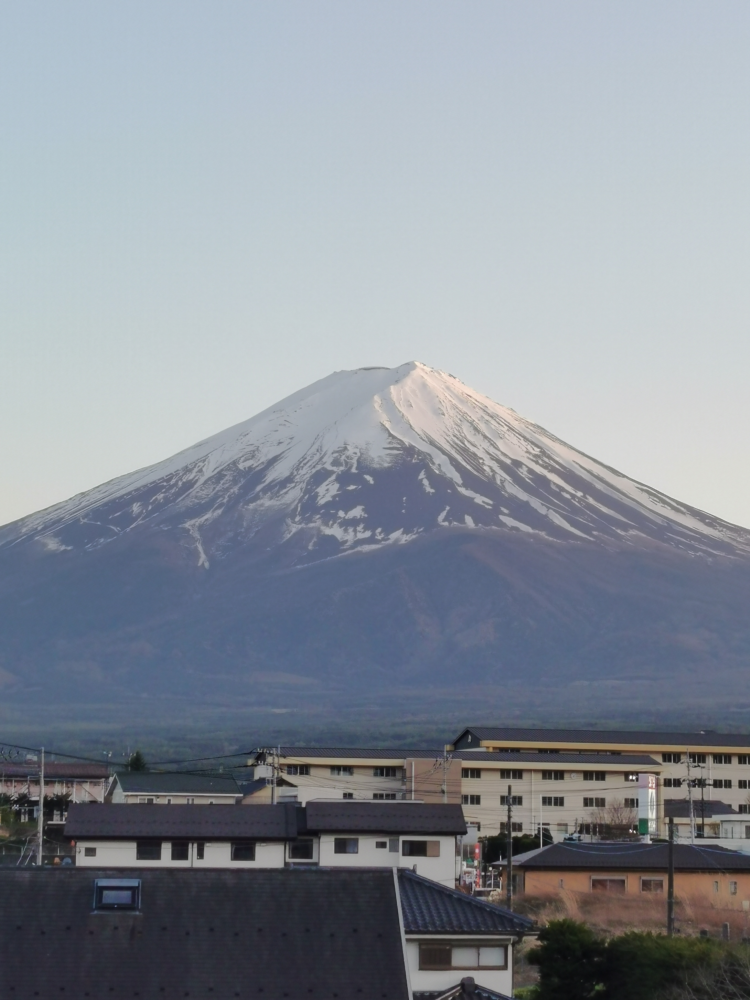
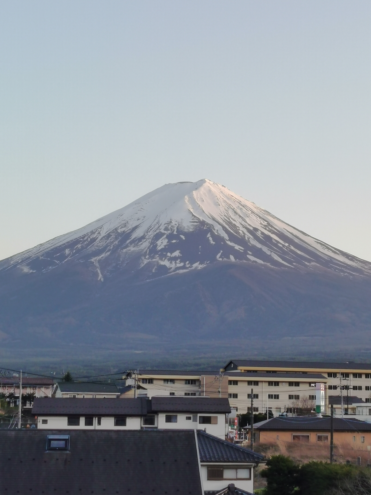

There are a lot of places to visit. We spent almost three weeks there, and it was not enough for us. The cities that we visited are all a must-see, and in some of them, we would definitely go back again. We had a circuit that went through Tokyo -> Mount Fuji -> Kyoto -> Osaka -> Nara -> Iga -> Nagoya -> Tokyo. Below are some of the places we've seen.


 
